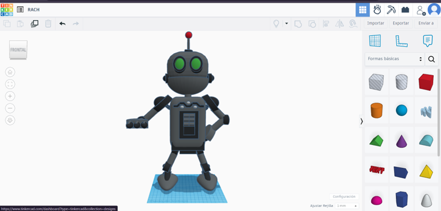
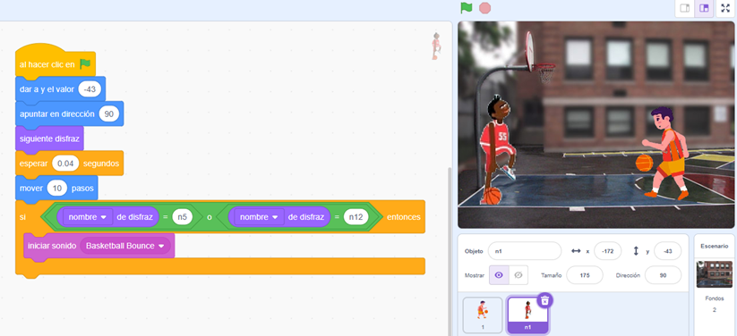
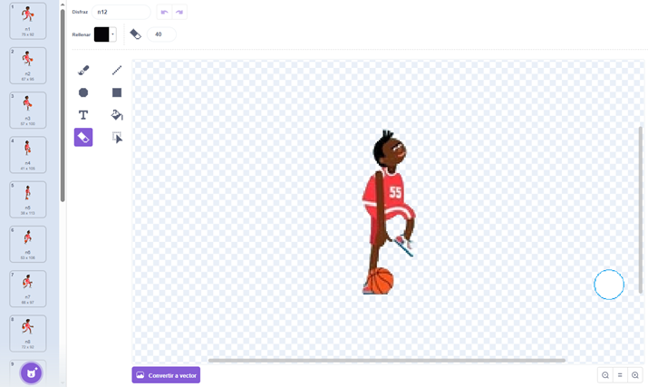
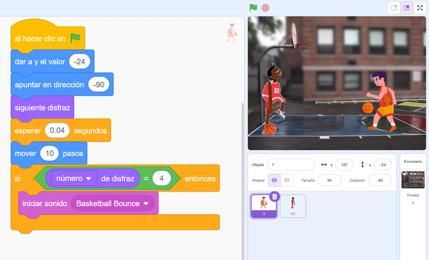
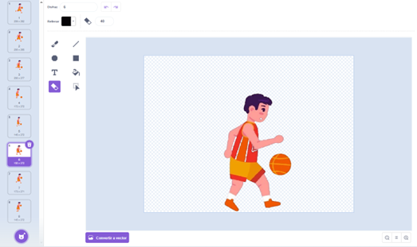

Revisión y Optimización del Modelo
En esta etapa final, revisaremos nuestro modelo para realizar los ajustes necesarios que mejoren su apariencia y funcionalidad. Sigue los siguientes pasos:
Optimización
- Ajusta detalles finos como los colores para lograr el aspecto deseado.
- Agrega otros detalles que contribuyan a mejorar el diseño general.
Revisión
- Verifica que todos los elementos del modelo estén correctamente alineados.
- Asegúrate de que el diseño cumpla con los objetivos definidos para el proyecto.
Una vez completados estos pasos, habrás creado un modelo 3D detallado y funcional, listo para ser utilizado en presentaciones o proyectos futuros.
Beneficios del Ejercicio
Este ejercicio no solo te ayudará a reforzar tus habilidades técnicas en el uso de Tinkercad, sino que también fomentará tu creatividad al resolver problemas de diseño. Asimismo, te permitirá encontrar soluciones innovadoras a los desafíos que puedan surgir durante el proceso.
¡Felicidades por llegar hasta aquí! Continúa explorando y mejorando tus habilidades de diseño 3D.
Retroalimentación
En esta etapa, hemos agregado movimiento y sonidos a cada una de las figuras, logrando que se reproduzca un sonido específico cuando se cambia a un disfraz determinado. Este enfoque hace que el proyecto sea más interactivo y dinámico.

Estos son algunos de los disfraces colocados para el primer personaje:

Para el segundo personaje, se han implementado los siguientes bloques de código:

Y estos son los disfraces utilizados para el segundo personaje:
